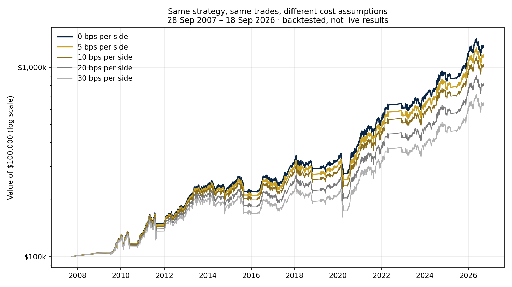

Quasi ogni backtest di strategie di rotazione che ci capita di leggere viene presentato al lordo dei costi, oppure con questi ultimi relegati a una nota a piè di pagina. Facile intuirne il motivo: a pochi basis point per operazione, l'aggiustamento sembra marginale e nessuno ama togliere punti a una curva dell'equity seducente. Il nostro approccio è diverso: in una strategia che cambia le proprie posizioni ogni mese, i costi di transazione fanno parte del risultato, non sono un dettaglio con cui fare i conti ex post.
Per dare una dimensione concreta al problema, abbiamo preso la strategia che utilizziamo — un portafoglio modello di quattro ETF quotati negli Stati Uniti, rivisto all'incirca una volta al mese, che si sposta interamente in liquidità quando le condizioni diventano avverse — e abbiamo eseguito lo stesso backtest cinque volte, modificando un solo input: il costo per lato di ogni operazione. Stessi segnali, stesse posizioni, stesse date, dal 28 settembre 2007 al 18 settembre 2026. Due ipotesi si applicano a tutte le simulazioni: la liquidità non investita viene remunerata al tasso statunitense a 3 mesi e i dividendi degli ETF sono esclusi (il che penalizza la strategia, non la favorisce). Questi sono risultati di backtest, non risultati live.
Risultati
| Costo per lato | CAGR | Sharpe | Max drawdown | 100.000 $ diventano |
|---|---|---|---|---|
| 0 bps | 14,5% | 0,89 | −28,5% | 1.303.000 $ |
| 5 bps · il nostro caso base | 13,8% | 0,85 | −28,6% | 1.160.000 $ |
| 10 bps | 13,1% | 0,82 | −28,6% | 1.032.000 $ |
| 20 bps | 11,7% | 0,74 | −30,7% | 817.000 $ |
| 30 bps | 10,4% | 0,67 | −32,9% | 646.000 $ |

La riga che molti lettori saltano è la seconda. Passare da zero a 5 bps per lato costa circa 0,7 punti percentuali all'anno: sulla carta sembra solo rumore; capitalizzato per 19 anni, però, diventa una differenza di 143 mila dollari su un capitale iniziale di 100 mila, più dell'intero investimento iniziale. A 30 bps il capitale finale è di 646 mila dollari invece di 1,303 milioni: circa la metà, senza aver cambiato nulla se non il prezzo pagato per eseguire esattamente le stesse operazioni.
La meccanica è semplice, anche se non sempre intuitiva: nell'intero periodo il modello ha attraversato 228 revisioni e 934 operazioni individuali, circa 49 l'anno, con un turnover annuale di circa 11,7 volte il capitale. Nessuna di queste operazioni è particolarmente costosa presa singolarmente: è la ripetizione, combinata con la capitalizzazione, a rendere significativa la differenza. E questo divario si nasconde proprio nel punto in cui la maggior parte degli investitori cerca il rischio: il drawdown massimo cambia appena tra 0 e 10 bps (−28,5% contro −28,6%), mentre il capitale finale scende di circa un quinto. I costi possono pesare molto sulla ricchezza finale anche quando il peggior ribasso cambia poco.
«Ma oggi le commissioni sono zero»
Un'obiezione ragionevole è che oggi le commissioni sono quasi nulle, quindi tutto questo esercizio sarebbe puramente accademico. Non è così: la commissione è soltanto una parte del costo. Il bid-ask spread e la differenza tra il prezzo assunto dal modello e quello effettivamente ottenuto sul mercato sono ancora lì, e non compaiono in nessun estratto conto. Sugli ETF più liquidi, 5 bps per lato è l'ipotesi che utilizziamo come caso base; sui prodotti meno liquidi, nelle sessioni più sottili o con broker meno competitivi, il costo effettivo può essere sensibilmente più elevato.
In oltre 21 anni davanti agli schermi ne abbiamo viste di tutti i colori: spread allargati oltre i 100 punti base nelle fasi più turbolente (quello che abbiamo vissuto durante la crisi dei subprime resterà impresso per sempre, e più di recente, durante la pandemia, ci sono state giornate che non esiteremmo a definire “psichedeliche”) e liquidità bassissima anche in periodi più tranquilli, soprattutto nelle sedute a ridosso dei lunghi ponti festivi. Per questo mostriamo l'intero intervallo da 0 a 30 bps invece di un singolo numero presentato come se valesse per tutti: nessun backtest conosce l'esecuzione di un investitore meglio dell'investitore stesso.
Tre domande prima di fidarsi di un backtest
Cosa dovrebbe chiedersi un investitore prima di fidarsi di un backtest di rotazione? Tre cose, a nostro avviso: se i risultati siano lordi o netti, quale costo per lato sia stato ipotizzato e quanto spesso cambia il portafoglio. La terza è quella che quasi nessuno chiede, ed è il moltiplicatore delle altre due: gli stessi 10 bps pesano in modo molto diverso su una strategia che opera due volte l'anno e su una che opera cinquanta volte.
Nulla di tutto questo è un argomento contro la rotazione sistematica: anche a 30 bps per lato questa strategia produce un rendimento composto del 10,4% annuo con uno Sharpe ratio di 0,67. I costi la peggiorano, ma non la compromettono. In questo caso, però, la differenza tra 14,5% e 10,4% dipende dall'esecuzione; e un numero che dipende dall'esecuzione va misurato, non sottovalutato o, peggio, ignorato.
I risultati di backtest sono ipotetici e non rappresentano risultati di trading effettivi: nessun ordine è stato inviato e nessuna esecuzione è avvenuta. La performance passata non è indicativa dei risultati futuri. Questo articolo è un'informazione di carattere generale e non costituisce consulenza personalizzata.